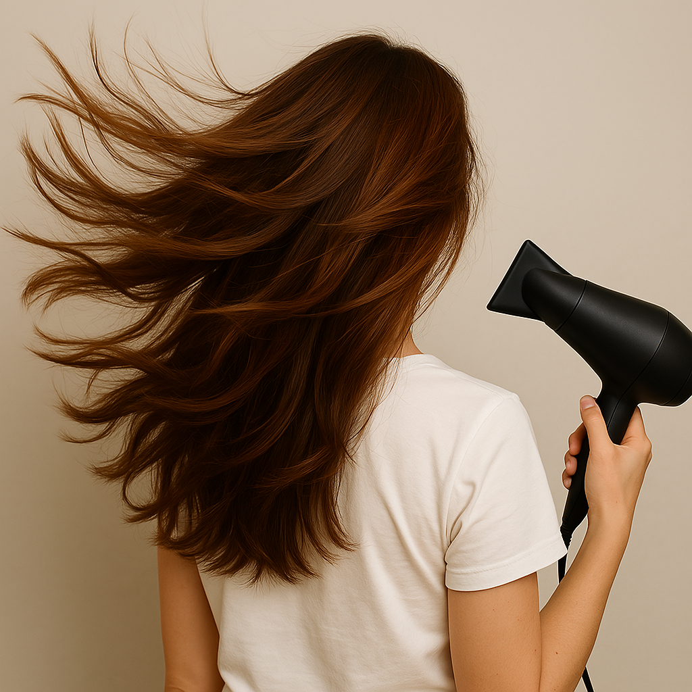

Hiustenhoito
Kaikki niksit & vinkit vaivattomaan hiustenhoitoon

1. Sokeria shampooseen
Tiesitkö, että päänahkaa pitäisi myös kuoria?
Kuorinta on tärkeää hiusten ja päänahan terveenä pysymiseksi
Kuoriminen ei vaan poista kuollutta ihosolukkoa ja tuotejäämiä,
mutta myös se auttaa hillitsemään päänahan rasvoittumista & hilsettä.
Kuoriminen myös parantaa verenkiertoa, mikä ehkäisee hiustenlähtöä.
Kuorimiseen ei tarvitse käyttää kalliita tuotteita,
täysin luonnollinen kuorinta-aine löytyy jokaisen kotoolta.
Nimittäin sokeri.
Sokeri on täysin luonnollinen raaka-aine, joka veteen liukenemisella,
tekee itsestään täydellisen kuorinta-aineen.
Ohje
- Laita sokeria valitsemaasi shampooseen
- Levitä shampoo hiuksiin & päänahkaan hellävaraisin liikkein
- Anna halutessasi vaikuttaa muutama minuutti
- Pese shampoo pois
- Jatka hiustenpesu rutiinisia normaalisti